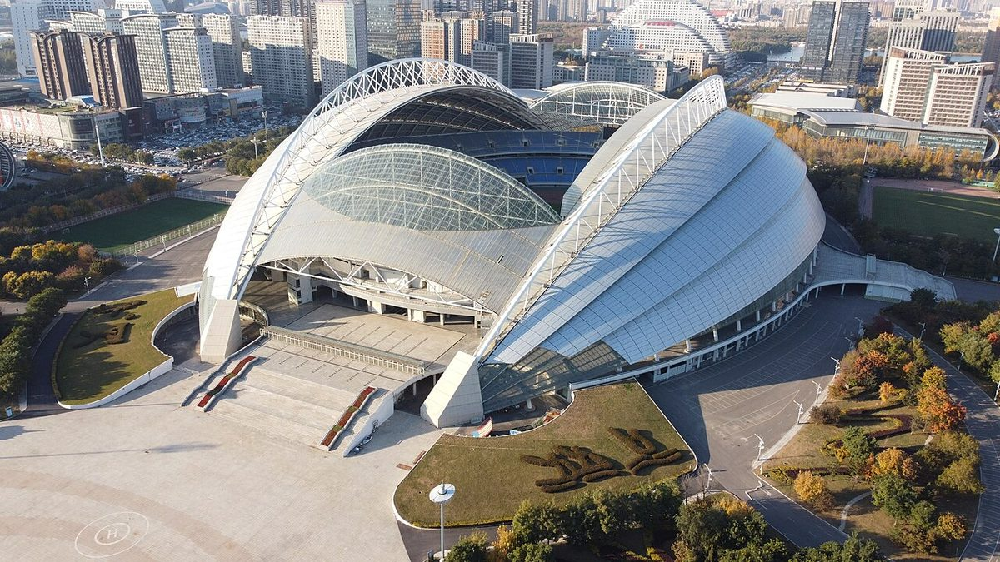
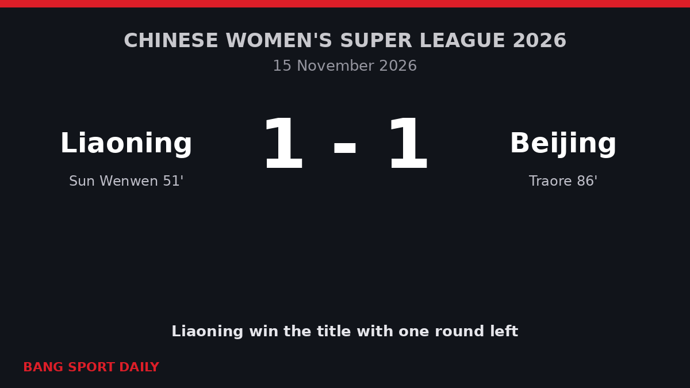

«Ляонин» впервые выиграл женскую Суперлигу Китая за тур до конца
Ничья 1:1 с «Пекином» дома в Шэньяне принесла титул — через год после того, как «Ляонин» упустил его в последнем туре в матче с тем же соперником.

Что произошло
Женская команда «Ляонин Шэньбэй Хэфэн» впервые выиграла женскую Суперлигу Китая: в воскресенье, 15 ноября 2026 года, она сыграла дома в Шэньяне вничью 1:1 с «Пекином» за тур до конца сезона. По данным агентства «Чайна ньюс», это первый титул клуба в высшем женском дивизионе.
«Ляонин» повёл на 51-й минуте: после углового Чжан Синь мяч головой скинула Ян Мань, и Сунь Вэньвэнь забила у дальней штанги, сообщили китайские СМИ. «Пекин» сравнял счёт на 86-й минуте — забила Саррату Траоре, но ничьей хватило: перед туром «Ляонин» опережал шедший вторым «Пекин» на четыре очка.

Через год после поражения в последнем туре
Год назад эта история закончилась для «Ляонина» неудачей. Команда, вышедшая в Суперлигу после победы во втором дивизионе в 2024 году, перед последним туром сезона-2025 нуждалась лишь в ничьей в гостях у «Пекина». Она проиграла 0:4, и титул достался «Пекину», напоминает «Чайна ньюс».
В этом сезоне «Ляонин» лидировал с регулярного чемпионата. Команду тренирует Ма Линь, сообщают китайские СМИ.
Почему это важно

Этот титул означает, что провинция Ляонин выиграла оба главных футбольных чемпионата Китая в 2026 году. Неделей ранее «Далянь Инбо», тоже из Ляонина, стал чемпионом мужской Суперлиги, обыграв «Тяньцзинь Цзиньмэнь Тайгер» 3:1. «Чайна ньюс» пишет, что в эпоху профессионального футбола ни одна провинция ещё не выигрывала оба высших дивизиона в одном сезоне. Как чемпион «Ляонин» также получает место в женской Лиге чемпионов АФК следующего сезона.
Главные факты
- Счёт: «Ляонин» — «Пекин» 1:1.
- Голы: Сунь Вэньвэнь, 51-я минута («Ляонин»); Саррату Траоре, 86-я («Пекин»).
- Титул: оформлен за тур до конца.
- Прошлый сезон: «Ляонин» проиграл «Пекину» 0:4 в последнем туре и стал вторым.